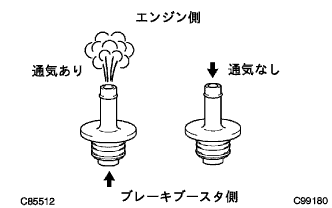

ブレーキ（4WD） 機能点検 |
| 1. ブレーキブースタ簡易点検 |
ブレーキブースタ気密機能点検
エンジンを始動させ、1-2分間アイドリングして停止する。
通常ブレーキを使用する程度の踏力でブレーキペダルを数回踏み、ブレーキペダル高さの変化を点検する。
ブレーキブースタ作動点検
エンジンを停止したまま同じ程度の踏力で数回ブレーキぺダルを踏み、ブレーキペダルの高さが変化しないことを点検する。
ブレーキペダルを踏んだままエンジンを始動してブレーキペダルの高さの変化を点検する。
ブレーキブースタ負荷気密機能点検
エンジン回転中ブレーキペダルを踏み、その状態でエンジンを停止し30秒間保持してブレーキペダルの高さの変化を点検する。
| 2. ポータブルブレーキブースターテスター使用点検 |
クリップをずらし、バキュームホースをバキュームチェックバルブから切り離す。
バキュームチェックバルブをブレーキブースタASSYから取りはずし、アダプタを取り付ける。
ポータブルブレーキブースターテスターおよびマイティーバックを図のように接続して、テスターのエア抜き行う。
気密機能点検
マイティーバックを使用して、ブレーキブースタASSY内の負圧を66.7ｋPa {500mmHｇ} にして、負圧の変化を点検する。
負荷気密機能点検
マイティーバックを使用して、ブレーキブースタASSY内の負圧を66.7ｋPa {500mmHg} にして、ブレーキペダルを踏力196N {20kgf} で踏み、負圧の変化を点検する。
無倍力作動点検
負圧がない状態で各踏力での液圧を点検する。
| 踏力 [N {kgf} ] | 液圧 [MPa {kgf/cm2} ] |
| 196 {20} | 0.5 {5.5} |
| 294 {30} | 1.4 {13.8} |
倍力作動点検
マイティーバックを使用して、ブレーキブースタ内の負圧を66.7ｋPa {500mmHg} にして、各踏力での液圧を点検する。
| 踏力 [N {kgf} ] | 液圧 [MPa {kgf/cm2} ] |
| 49 {5} | 2.6 {26.7} |
| 98 {10} | 5.7 {57.7} |
| 147 {15} | 8.2 {83.2} |
| 196 {20} | 8.6 {87.3} |
ポータブルブレーキブースターテスタおよびマイティーバックを取りはずす。
アダプタを取りはずし、バキュームチエックバルブを取り付ける。
クリップで、バキュームホースをバキュームチェックバルブに接続する。
ブレーキシステムエア抜き
| 3. ブレーキバキュームチェックバルブASSY点検 |
|  |
クリップをずらし、バキュームホースを切り離す。
バキユームチエツクバルブASSYをブレーキブースタASSYから取りはずす。
ブレーキブースタASSY側からエンジン側に通気があることを、また、エンジン側からブレーキブースタASSY側に通気がないことを点検する。
バキュームチェックバルブASSYをブレーキブースタASSYに取り付ける。
クリップで、バキュームホースをバキュームチェックバルブに接続する。